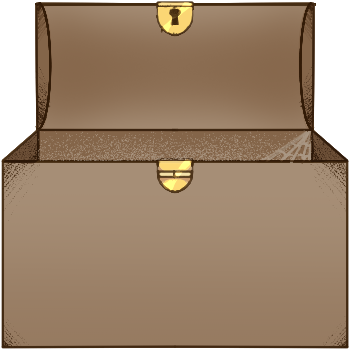
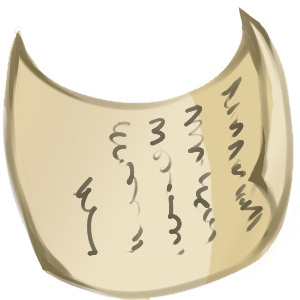
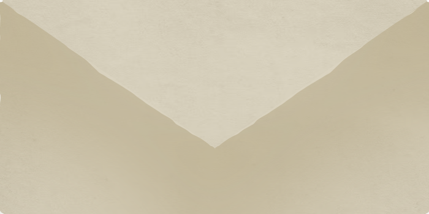

Кто украл подарок?
Пять дней, пять загадок, а результат — пыль и паутина...
Как же так.
Не ищите взломщика снаружи. Предатель всегда был среди нас, Совета. Восемь человек, и один из них возжелал чуть больше, чем положено.
Условие просто и элегантно. Если хотите увидеть свой подарок снова — назовите моё имя и попробуйте меня призвать.
Посмотрим, хватит ли у вас смелости выбрать, кого подозревать. Ответ на дне сундука. Удачи.